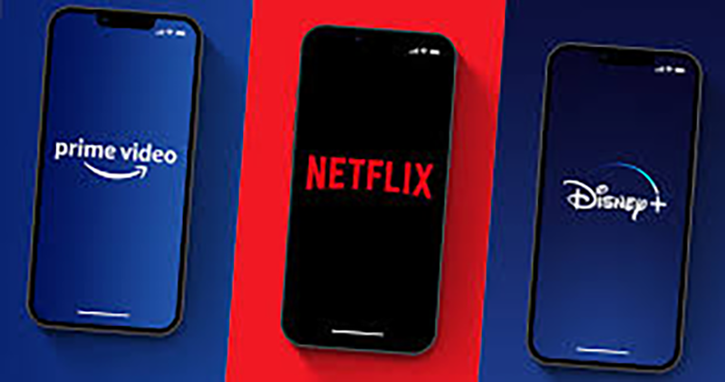

By Adrian Chase Freeman
March 4, 2020
Streaming versus cable: It’s an ongoing, ever-changing battle. And your hard-earned dollars hang in the balance.
With prices in flux and providers increasingly trying to emulate their competition, navigating the conflict can be a messy endeavor.
It can be deceptively difficult to figure out whether switching to a streaming TV service or sticking with a traditional paid-TV provider would be cheaper for you.
The battle for streaming service dominance is always heating up. (Credit: reviews.org)
Here’s how to navigate the growing number of viewing options without tripping on a land mine that will blow your budget:
The cost of streaming TV is more than just the amount you pay to a streaming service like Netflix or Hulu every month.
To stream video, you need an internet connection. And that means you’ll be bowing before the likes of Comcast and AT&T, which could really cost you if you want high-speed internet access.
As there are different internet packages and speeds, you may be asking which one is right for you. For this answer, you’ll have to consult the streaming services you want to subscribe to and consider what stream quality you want to pay for.
Netflix, for example, recommends that you have an internet download speed of 5 megabits per second (Mbps) per stream for HD quality video, and 25 Mbps per stream for Ultra HD quality.
If you want to stream on multiple devices simultaneously, you’ll need even more megabits per second. For example, you’d need 10 Mbps to stream HD quality Netflix video on two devices at the same time.
Once you determine how much speed you need, check with your local service providers to see who’s offering it for the best price. And for more tips to save money on internet service, check out “8 Ways to Cut Your Internet Costs Every Month.”
Can you truly replace cable with streaming, channel for a channel? Technically, it’s possible. But if you must have an array of channels, you will likely have to subscribe to multiple streaming services.
This means that if you can get by with only the internet and Netflix, you will likely save money by ditching cable. But households with diverse tastes may find cable to be cheaper than subscribing to multiple streaming services.
Let’s take a look at what a full streaming lifestyle could cost a hypothetical family:
The brings the total cost of streaming entertainment to $95.88 or $99.88 a month for our hypothetical family — not counting the cost of their internet service. So, clearly, choosing streaming services a la carte could add up fast for some households.
To determine whether streaming TV services could truly replace your current cable or satellite TV package — and how much it would cost you — you must first decide which shows and channels you cannot live without. Make a list.
Then, find out which streaming services offer those shows or channels and how much they cost. Consult free online resources like The Streamable’s channel comparison tool for help.
Here’s another tip: Many streaming services don’t have contracts, meaning you can cancel a subscription at any time. So, you could try out one service at a time at minimal cost.
For example, watch Hulu originals for a month or two. Then, cancel it and try out Netflix.
Another no-contract option: Forget streaming altogether. Instead, check out DVD Netflix, a DVD-by-mail rental service owned by Netflix.
If you’re a Blu-ray binge-watcher, you could subscribe to DVD Netflix’s $14.99-per-month Premier plan and get unlimited rentals with the ability to check out two discs at a time. One caveat: You need patience, as it can take a while for movie releases to come to DVD.
Walking away from cable can save you hundreds of dollars a year, if not more. But walking away from the prerecorded laugh tracks and the background roars of game-day crowds can be tough.
The right choice for you depends on your preferences, priorities and budget. So, you need to take the time to explore the options, compare prices and consider what’s most important to you.
Oh, and unless you give up TV entirely, you also need to stay on top of bill changes and new specials being offered.
What’s your best advice for people trying to choose between streaming and traditional TV? Share your thoughts by commenting below or over on our Facebook page or YouTube channel.